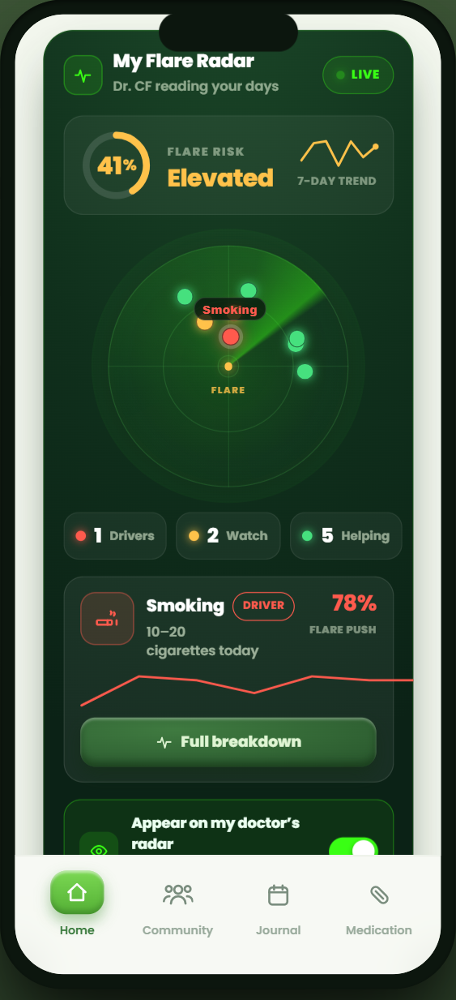
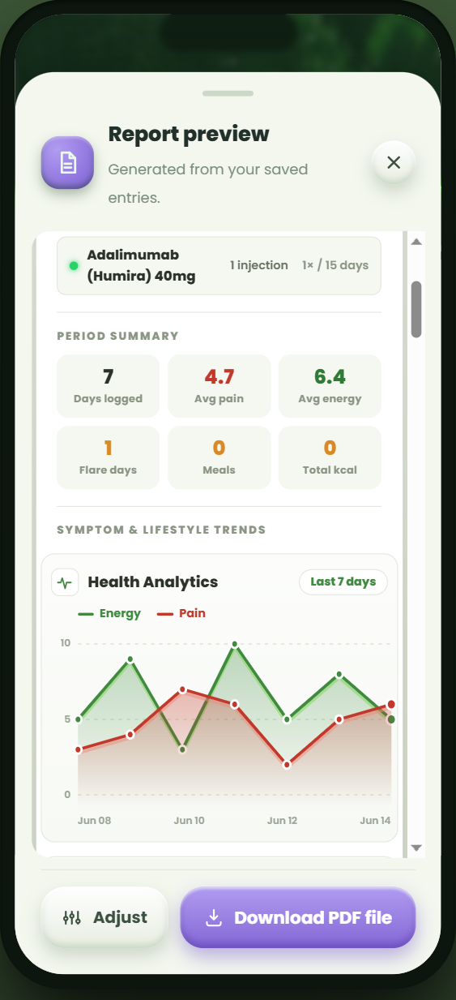
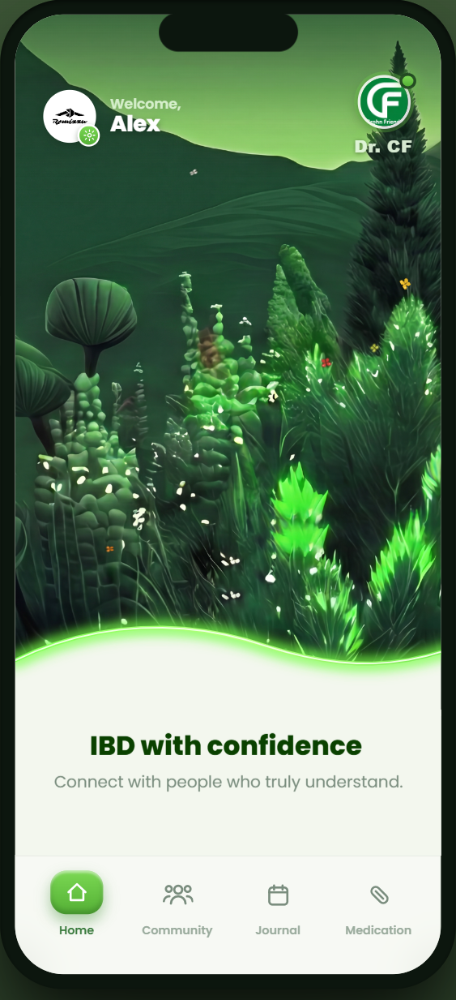
{{ dt.heroSub }}
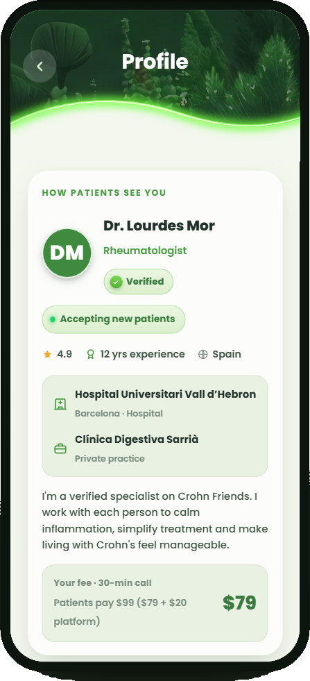
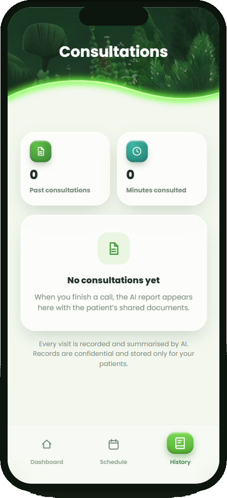
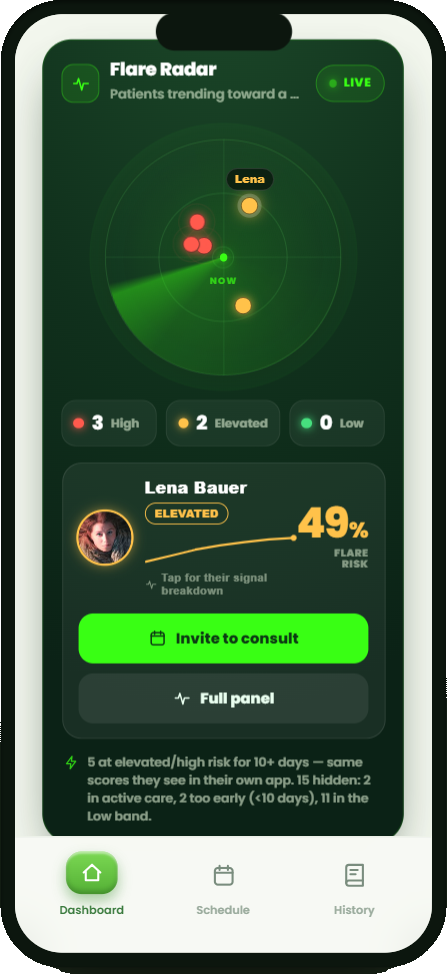
{{ t.featSub }}
{{ t.f5b }}
{{ t.f6b }}
{{ t.lookSub }}
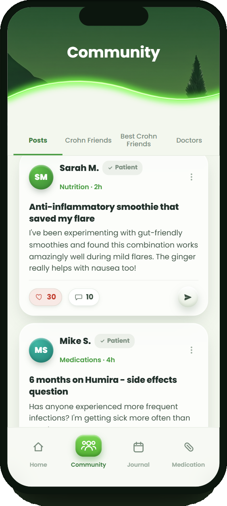
{{ t.f1b }}
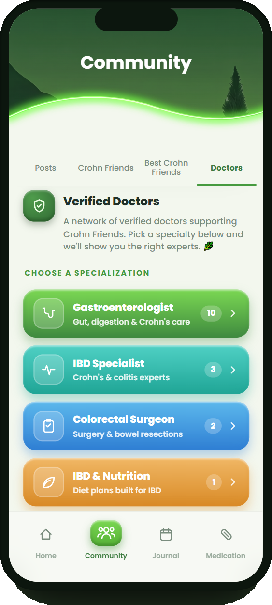
{{ t.f3b }}
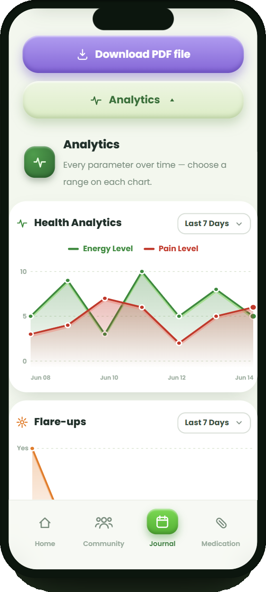
{{ t.f2b }}
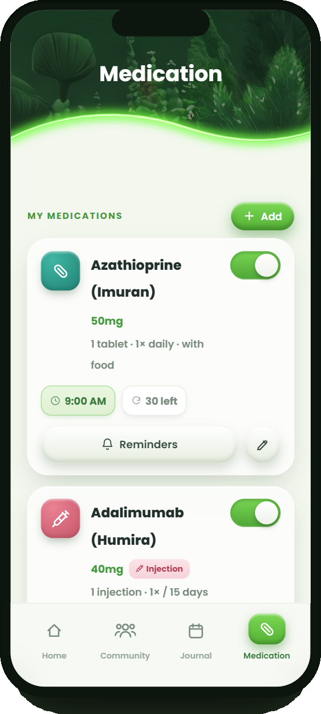
{{ t.f4b }}
{{ t.s1b }}
{{ t.s2b }}
{{ t.s3b }}
“{{ t.q1 }}”
“{{ t.q2 }}”
“{{ t.q3 }}”
{{ t.t1s }} {{ t.t1b }}
{{ t.t2s }} {{ t.t2b }}
{{ dt.hpSub }}
{{ dt.hp1b }}
{{ dt.hp2b }}
{{ dt.hp3b }}
{{ dt.ver1b }}
{{ dt.ver2b }}
{{ dt.ver3b }}
{{ dt.featSub }}
{{ dt.f1b }}
{{ dt.f2b }}
{{ dt.f4b }}
{{ dt.ovSub }}
{{ dt.ov1b }}
{{ dt.ov2b }}
{{ dt.lookSub }}
{{ dt.cw1b }}
{{ dt.cl1b }}
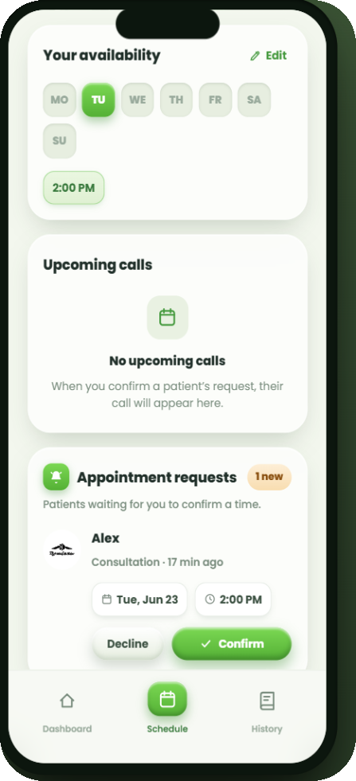
{{ dt.cw3b }}
{{ dt.s1b }}
{{ dt.s2b }}
{{ dt.s3b }}
“{{ dt.q1 }}”
“{{ dt.q2 }}”
“{{ dt.q3 }}”
{{ dt.t1s }} {{ dt.t1b }}
{{ dt.t2s }} {{ dt.t2b }}
{{ dt.ctaSub }}
{{ imp.body }}
{{ imp.c1b }}
{{ imp.c2b }}
{{ imp.c3b }}